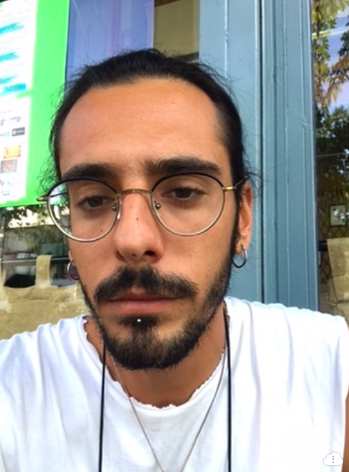

My Resume

About me
 Konstantinos Kouvelis
Konstantinos Kouvelis
07/07/1998
Athens Greece
Contact me
Summary
Hello my name is Konstantinos, but my associates call me Ntinos for shorter, I'm in the job market since 2016 with many years or working experience in the Hosting industry. Lately I took up programming among many other things. I am a team player and enjoy teamwork and good vibes on my working place. I really like taking up and complete projects assigned to me. I always tend to stay possitive and assess what ever obstacle I encounter and I love solving mind bending problems.
Education
- Technical Lyceum of Istiaia
- Department of Economics and Managment
- University of Western Athens
- Department of Tourism Managment
Work Experience
- Atmosphere Restaurant, Kamari, Santorini
- 8 months, 2016-2018 (seasonal)
- Secondary Waiter
- Costa Navarino, Peloponese
- 4 months, 2019 (seasonal)
- Head Waiter
- Fygias Cafe-Bar, Pefki, Evia
- 5 years, 2019-2024 (seasonal)
- Head Waiter, Barman, Host, Check Supervisor
- Galini Hotel, Pefki, Evia
- 1 month, 2020 (seasonal)
- Receptionist
- Pefki Tours, Pefki, Evia
- 1 month, 2019 (seasonal)
- Tour Agent
- Iliostasio Cafe-Eatery, Thissio, Athens
- 4 years, 2020-2024
- Head Waiter, Chef, Barman, Supervisor
- Skales Kafeneio, Thissio, Athens
- 2024-present
- Head waiter, Chef, Supervisor
Skills
- Languages
- Greek
- English
- Italian
- German
- Serbian
- Personality Traits
- Positive Attitude
- Quick Study
- Teamwork
- Social
- Hardworking
- Good at following guidelines
- Out of the box thinking
- Persistant on problem solving
- Can take on responsibility
- Always willing to help
Diplomas
- Technical Lyceum Diploma
- Certificate of Excellence and Best Grade
- Managment and Economics Technical Diploma
- Distinction and Award of first to be introduced to university with best grade.
- University Deegree on Tourism Managment
- Touch typing Certificate
- Web Developing Certificate
- Online Web Developing courses with Angela Yu Certificate
- Google online Marketing courses Certificate
Hobbies
Summary
I consider my self a pretty active person. Always trying new things with unquenchable thirst for new experiences. Over the years I have taken up many hobies and activities. Currently I am experimenting with various aspects of art such as tattooing , music production, sculpture and more. Some of my side projects and hobbies are:
- Music production
- Singing
- Beatmaking
- Songwriting
- ukulele (self taught)
- piano (self taught)
- Sculpture
- Painting
- Graphic Design
- Interior Home Design
- Fashion
- Video games
- Book and poetry reading
- Hiking
- Social media content creator
Side Projects
- Rap band "Opla Kovel & Vasschula"
- T-shirt stamping brand "Lules"
- Vintage Clothing Instagram page "Giafka Kovel"
- Handmade clay creations "Berlains"